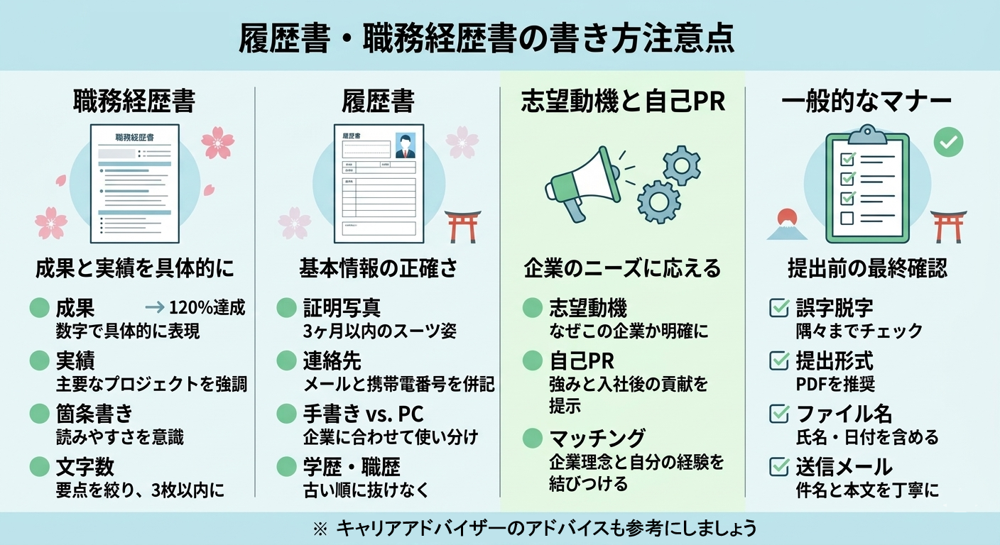

2-2. 自身の履歴書・職務経歴書
応募企業とのやり取りに使用した履歴書・職務経歴書は、
面接準備において非常に重要です。
面接では、提出済み書類に基づいて質問されることが多いため、
基準にする資料を明確にしておきましょう。
応募企業とのやり取りに使用した履歴書・職務経歴書は、
面接準備において非常に重要です。
面接では、提出済み書類に基づいて質問されることが多いため、
基準にする資料を明確にしておきましょう。
面接では、提出済み書類に基づいて質問されることが多いため、
自分が実際に提出した内容と一致していることが重要です。
提出した履歴書・職務経歴書はリネームして整理しておきましょう
例：履歴書_株式会社○○_2026年.pdf
例：職務経歴書_株式会社○○_2026年.pdf
※企業に提出する履歴書・職務経歴書には、
企業名は書いてはいけませんので気をつけましょう。
